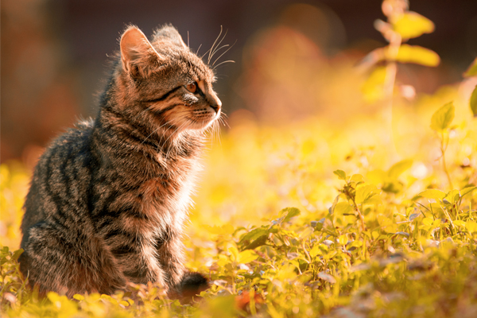
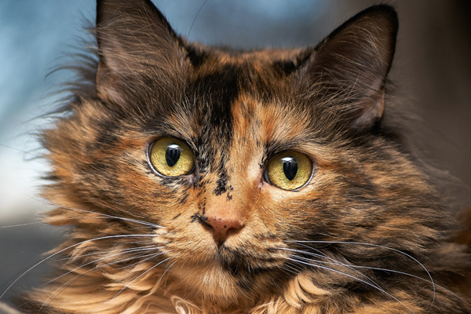
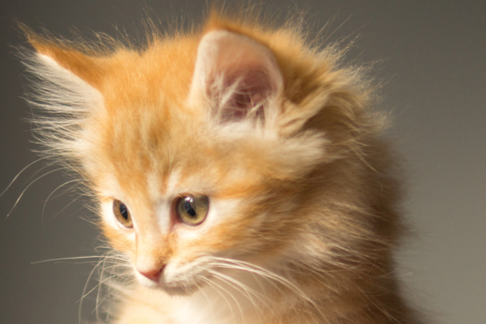
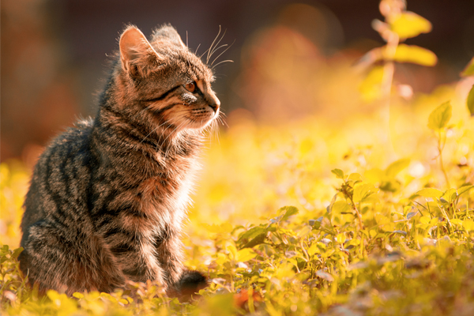
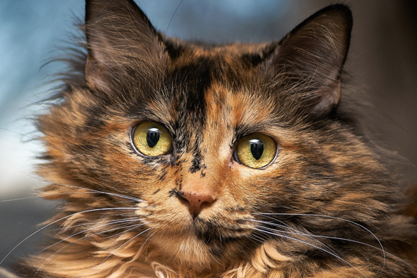
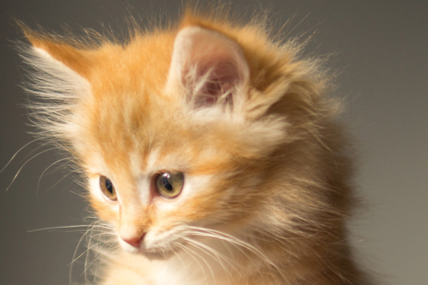
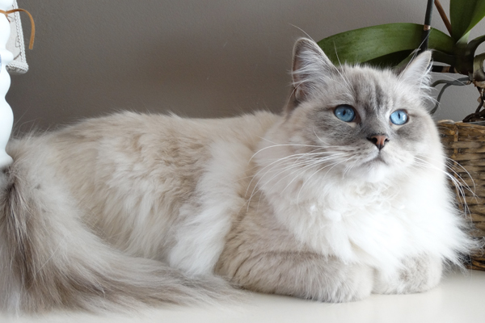
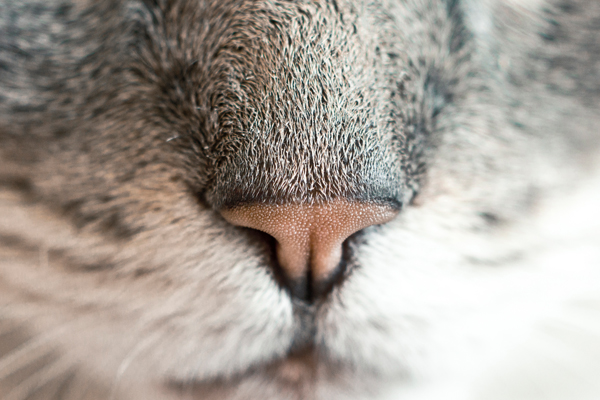
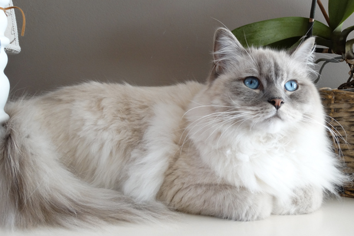
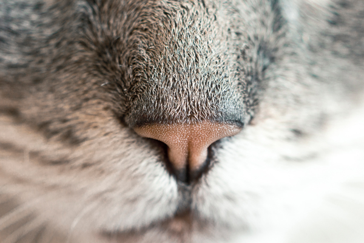

Welcome to our Maine Coon Cattery! We are a small cattery, located high in the beautiful Colorado Mountains. Our home sits at the foot of Mt. Evans, deep within a canyon. Idaho Springs is located about 23 miles west of Denver, Colorado. All of our cats and kittens live in our home and are also our pets. Our kittens are raised by hand and underfoot, where they get lots of love and attention, so you can be sure that they will be sociable, loving kittens.
All of our adult breeding kitties are negative for FIV, FELV and tested for HCM. Our kittens come with a purchasing contract and a one year health guarantee, so you know that you will be receiving a healthy kitten. We also guarantee that the kittens have never been exposed to FIV, FELV or HCM.
 






 



About Maine Coons
The Maine Coon is one of the oldest and largest domestic cats in the world. They have tuffs of hair on the tips of their ears, much like the linx. Maine Coons inherited their name because they are from Maine, and also because their tails resemble a Raccoon tail. Many people, in the past, thought that Maine Coons were related to the Raccoon, but Science has taught us otherwise. Maine Coons can grow to be 23-25 pounds, and sometimes even larger. The females tend to be a little smaller and usually weigh between 18 and 22 pounds. Maine Coons also live much longer than other breeds of cats. It is not unusual for a Maine coon to live to be 23-25 years old! Maine Coons are known for their sweet, gentle, quiet personalities. Many people think that they have an almost dog-like personality, because they are very intelligent and will follow you from room to room and come when they are called. They are often called gentle giants or lounge cats because of their quiet personality, which makes them a great pet for the family! You cannot find a more original, friendly, fun cat to welcome into your home. They will give you all the love and affection that you could possibly ever want or need!